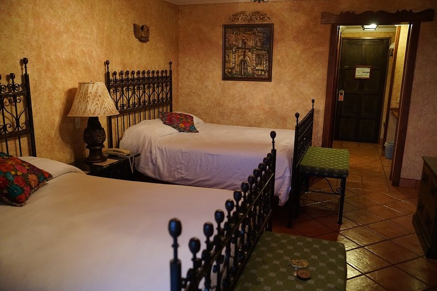

New Study Links Poor Deep Sleep to Alzheimer's-Related Tau and Memory Loss
Researchers at UC Berkeley compared how brain waves move during deep sleep in young and older adults, and found a pattern tied to both tau buildup and how well memory held up overnight.

Photo: jjmusgrove / Wikimedia Commons / CC BY 2.0
Key takeaways
- A study published September 11, 2026 in Nature Neuroscience found that certain deep-sleep brain waves travel less far and less predictably in older adults than in young adults.
- Researchers led by Omer Sharon, under the direction of sleep scientist Matthew Walker, compared 61 young adults (around age 20) with 74 older adults (around age 75).
- Participants with more tau protein buildup in the frontal cortex had weaker, less-traveling slow waves during non-REM sleep, and performed worse on an overnight memory test.
- This is an association, not proof that poor sleep causes Alzheimer's disease or that improving sleep prevents it.
- The finding adds to a growing body of research connecting deep sleep quality with brain aging, but sleep is one factor among many.
A study published September 11, 2026 in the journal Nature Neuroscience adds new detail to a question researchers have been chasing for years: how does the quality of deep sleep relate to the tau protein buildup seen in Alzheimer's disease? The answer, based on this study, involves something researchers call "traveling slow waves," bursts of coordinated brain activity that move across the brain during the deepest stage of sleep.
What is a "traveling slow wave," and why does it matter?
Deep sleep, technically called slow-wave sleep, is marked by large, slow bursts of electrical activity that sweep across the brain in coordinated patterns. Researchers have linked this stage of sleep to memory consolidation for years: it's thought to be when the brain replays and strengthens the day's new information, shifting it from a fragile, short-term form into something more durable. A wave that travels cleanly across the cortex is generally taken as a sign that this process is running the way it's supposed to. A wave that stays confined to one small patch of brain, what the researchers in this study called "lonely," is a sign that the coordination behind it may be breaking down somewhere.
What did the study actually look at?
The research team, led by UC Berkeley neuroscientist Omer Sharon and directed by longtime sleep researcher Matthew Walker, compared two groups: 61 young, cognitively healthy adults averaging around 20 years old, and 74 older adults averaging around 75. Within roughly 18 months of a PET scan measuring tau protein in the brain, each participant spent two nights in a sleep lab, where researchers recorded brain activity with EEG and tested overnight memory retention using a word-association recall task.
In the younger group, slow waves of electrical activity during non-REM sleep tended to move in a coordinated way, starting near the front of the brain and traveling toward the back. In the older group, those waves were more likely to stay put, described by the researchers as "lonely" rather than traveling, and less evenly spread across the brain.
How does tau fit in?
The key finding connects the two measurements: the more tau protein someone had built up in the frontal cortex, the part of the brain where these slow waves originate, the weaker and less far-traveling their slow waves were during sleep. Participants with that pattern also tended to do worse on the overnight memory task, suggesting the disrupted wave activity may be part of how tau buildup interferes with memory consolidation, the process by which the brain files a day's experiences into longer-term storage overnight.
COMPLEX
The memory formula we rate highest in 2026
One formula combined a fully transparent, clinically-dosed label — citicoline, bacopa, phosphatidylserine and B-vitamins — with a 60-day guarantee.
See Today's Price →Why this matters, and why it doesn't prove causation
It's worth being direct about what this study does and doesn't show. It's a comparison between two groups at roughly one point in time, alongside a biomarker (tau on PET scan) and a memory test, not a trial where anyone's sleep was changed and then measured for its effect on tau or memory. That design can show a real, meaningful association. It can't, by itself, prove that poor deep sleep causes tau to build up, or that tau buildup is what breaks the traveling-wave pattern, or that fixing one would fix the other. Older and younger participants also differ in plenty of ways beyond sleep and tau, which the researchers would have tried to account for statistically, but can't fully rule out.
That caveat doesn't make the finding unimportant. It fits into a larger, still-developing picture connecting deep, slow-wave sleep with brain aging and Alzheimer's risk, a picture this same research group has been building for years. What's new here is the specific mechanism proposed: not just that sleep quality and tau are both worse in some older adults, but a plausible link between where tau accumulates and how the resulting wave activity moves, or fails to move, through the brain overnight.
What this means for you
There's no new supplement, drug or specific sleep routine that this study validates, and it shouldn't be read as a reason to panic about a single bad night's sleep. What it does reinforce is something already well supported elsewhere: consistent, adequate deep sleep is one of the more modifiable pieces of long-term brain health, alongside exercise, diet and staying mentally and socially engaged. Our guide to sleep and memory consolidation covers the more established side of this relationship, how sleep the night after learning something helps lock it in, which is a related but distinct question from the one this new study addresses.
If you're noticing real changes in memory, not just occasional forgetfulness, alongside poor sleep, that's worth raising with a doctor rather than trying to self-diagnose from a single study. Sleep problems have plenty of treatable causes, and a physician is better positioned to sort out what's actually going on than any general health article, this one included.
The bigger research picture
This study joins a growing list of findings tying sleep architecture, not just how long you sleep but the structure and coordination of specific brain-wave activity, to markers of brain aging. Earlier work from the same Berkeley lab has linked reduced deep sleep to tau spread and to worse next-day memory performance in other ways, and separate research groups have reported related links between disrupted sleep in midlife and later dementia risk. None of these studies, this one included, settle the underlying question of cause and effect. Longitudinal work that tracks the same people's sleep, tau levels and memory over many years would do more to establish whether one change reliably precedes the other.
Taken together, this research keeps pointing in the same general direction: protecting deep sleep looks like a genuinely useful, low-risk habit for brain health, even though no single study proves it prevents Alzheimer's disease on its own. As with most findings in this area, the honest summary is that sleep matters, the details of exactly how and how much are still being worked out.
Frequently asked questions
What did the new Berkeley sleep study find?
Researchers found that older adults with more tau protein buildup in the frontal cortex had weaker, less-coordinated slow brain waves during deep sleep, and performed worse on an overnight memory test, compared with younger adults.
Does this study prove poor sleep causes Alzheimer's disease?
No. It shows an association between tau buildup, disrupted slow-wave activity during sleep, and memory performance. It doesn't establish that poor sleep causes tau to accumulate or that improving sleep would prevent Alzheimer's disease.
Where was the study published?
In the journal Nature Neuroscience, on September 11, 2026. The research was led by UC Berkeley's Omer Sharon under the direction of sleep researcher Matthew Walker.
What can I do with this information?
Treat it as further support for prioritizing consistent, adequate sleep as part of overall brain health, alongside exercise, diet and staying mentally engaged, rather than as a reason to worry about any single night's sleep.
What is a traveling slow wave?
It's a coordinated burst of electrical activity during deep, non-REM sleep that moves across the brain, typically starting near the front and spreading toward the back. Researchers see this coordinated movement as part of how the brain consolidates memory overnight.
Support your brain's full routine
Sleep quality is one piece of long-term brain health, alongside diet and the right nutrients. See the memory formulas our editors rate highest for 2026.
See the Top 5 Memory Formulas →Related: Sleep and memory consolidation · The forgetting curve explained · Memory loss vs. normal aging · Best memory formulas of 2026